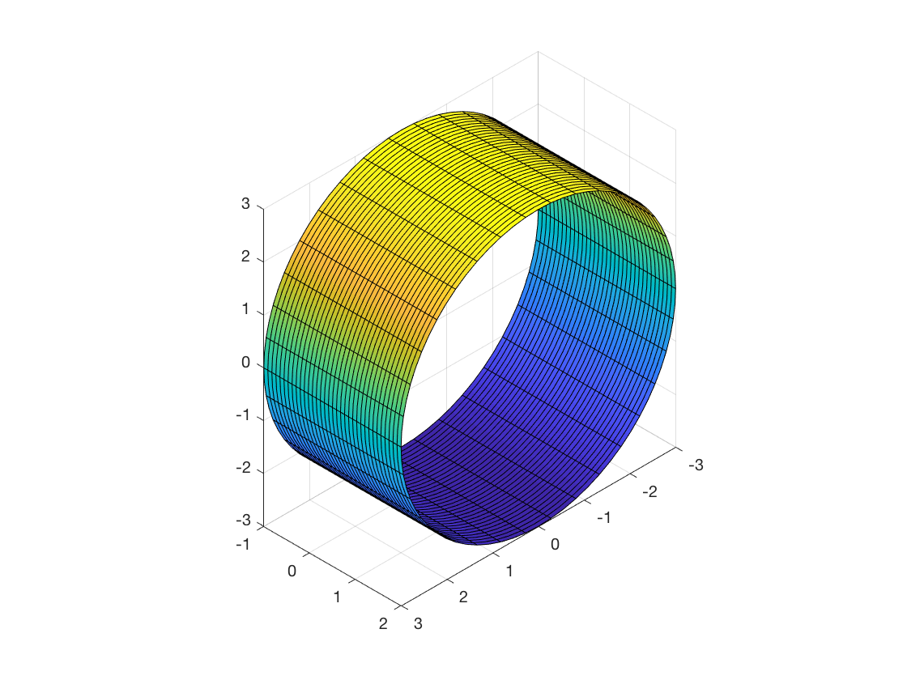
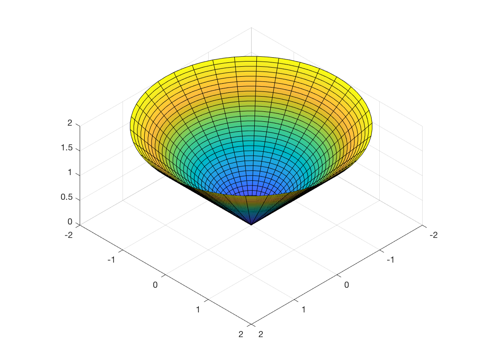
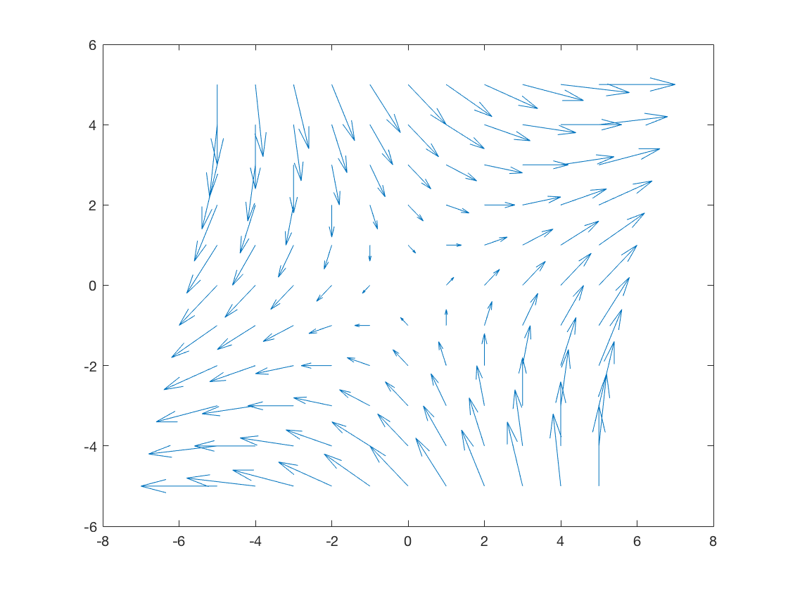

Zachary Kolodny
UID: 112311827 - MATH241 - CALC III - MATLAB Project 3
clear all; syms x y z theta r t u;
Task 1
int(int(int(x,z,0,9-x^2-y^2),y,0,x),x,0,2)
ans = 232/15
Task 2
int(int(int(z*r,z,0,10-r*cos(theta)),r,0,sin(theta)),theta,0,pi/2)
ans = (1601*pi)/256 - 5/6
Task 3
clear all; syms x y z theta r t u; rbar = [3*cos(theta),y,3*sin(theta)]; fsurf(rbar(1),rbar(2),rbar(3),[0,2*pi,-1,2]) view([10 10 10]) axis equal
Task 4
clear all; syms x y z theta r t u; rbar = [r*cos(theta),r*sin(theta),r]; fsurf(rbar(1),rbar(2),rbar(3),[0,2,0,2*pi]) view([10 10 10]) axis equal
Task 5
clear all; syms x y z theta r t u; [x,y] = meshgrid(-5:1:5,-5:1:5); quiver(x,y,.2*(x+y),.2*(x-y),0)
Task 6
clear all; syms x y z theta r t u; rbar = [cos(t),sin(t)]; d = x^2 + y^4; length = @(u) sqrt(u*transpose(u)); mag = simplify(length(diff(rbar,t))); sub = subs(d,[x,y],rbar); int(sub*mag,t,0,2*pi)
ans = (7*pi)/4
Task 7
clear all; syms x y z theta r t u; rbar = [3*t,t,t]; f = x + y; length = @(u) sqrt(u*transpose(u)); mag = simplify(length(diff(rbar,t))); sub = subs(f,[x,y,z],rbar); int(sub*mag,0,1)
ans = 2*11^(1/2)
Task 8
clear all; syms x y z theta r t u; rbar = [0,2*cos(t),2*sin(t)]; F = [x*y,y*z,y]; sub = subs(F,[x,y,z],rbar); int(dot(sub,diff(rbar,t)),0,2*pi)
ans = 4*pi
Task 9
clear all; syms x y z theta r t u; rbar = [x,y,10-x-y]; f = x^2+y^2; length = @(u) sqrt(u*transpose(u)); mag = simplify(length(cross(diff(rbar,x),diff(rbar,y)))); subresult = subs(f,[x,y,z],rbar); int(int(subresult*mag,x,-1,1),y,-1.1)
ans = -(3^(1/2)*(1000*y^3 + 1000*y + 2431))/1500
Task 10
clear all; syms x y z theta r t u; rbar = [cos(t),sin(t),z]; F = [y,-x,z]; kross = simplify(cross(diff(-1*rbar,t),diff(rbar,z))); sub = subs(F,[y,-x,z],rbar); int(int(dot(sub,kross),z,0,3*sqrt(6)),t,0,2*pi)
ans = -6*pi*6^(1/2)